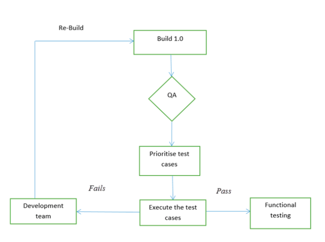

Smoke Testing: A QA Guide
Smoke Testing is a software testing process that determines whether the deployed software build is stable or not. Smoke testing is a confirmation for QA team to proceed with further software testing. It consists of a minimal set of tests run on each build to test software functionalities.
In layman’s words, smoke tests means verifying the important features are working and there are no showstoppers in the build that is under testing. It is a mini and rapid regression test of major functionality. It is a simple test that shows the product is ready for testing. This helps determine if the build is flawed as to make any further testing a waste of time and resources.
Smoke Testing is done whenever the new functionalities of software are developed and integrated with existing build that is deployed in QA/staging environment. It ensures that all critical functionalities are working correctly or not.
The main aim of smoke testing is to detect early major issues. If we don’t perform smoke testing in early stages, defects may be encountered in later stages where it can be costly. And the Defect found in later stages can be show stoppers where it may affect the release of deliverables.
Characteristics of Smoke Testing:
Following are the characteristics of the smoke testing
- Smoke testing is documented.
- Smoke testing may be stable as well as unstable.
- Smoke testing is scripted.
- Smoke testing is a type of regression testing.
Smoke Testing is usually carried out by quality assurance engineers. But it can be carried by developers too.
Goal of Smoke Testing:
The aim of Smoke Testing is:
- To detect any early defects in a software product.
- To demonstrate system stability.
- To demonstrate conformance to requirements.
- To assure that the acute functionalities of the program are working fine.
- To measures the stability of the software product by performing testing.
- To test all over the function of the software product.
Types of Smoke Testing:
There are three types of Smoke Testing
- Manual Testing: In general, smoke testing is done manually. It approaches varies from one organization to other.
- Automated Testing: Automation Testing is used for Regression Testing. Instead of having repeated test manually whenever the new software build is deployed, recorded smoke test cases are executed against the build. It verifies whether the major functionalities still operates properly. Using an automated tool, test engineer records all manual steps that are performed in the software build.
Applying Smoke Testing at different levels
It is applicable at 3 levels of testing. They are
- Acceptance Testing Level
- System Testing Level
- Integration testing Level
Tools used for Smoke Testing:
- Selenium - is mostly used by Testers for all types of testing processes
- PhantomJS - is used for unit testing and smoke testing processes before moving the code to the test environment
These tools are used while implementing the automated test cases.
Advantages of Smoke Testing:
- Smoke testing is easy to perform.
- It helps in identifying defects in the early stages.
- It improves the quality of the system.
- Smoke testing reduces the risk of failure.
- Smoke testing makes progress easier to access.
- It saves test effort and time.
- It makes it easy to detect critical errors and helps in the correction of errors.
- It runs quickly.
- It minimizes integration risks.
Disadvantages of Smoke Testing:
- Smoke Testing does not cover all the functionality in the application. Only a certain part of the testing is done.
- Errors may occur even after implementing all the smoke tests.
- In the case of manual smoke testing, it takes a lot of time to execute the testing process for larger projects.
- It will not be implemented against the negative tests or with the invalid input.
- It usually consists of a minimum number of test cases and hence we cannot find the other issues that happened during the testing process.
Smoke testing cycle

Example 1 − Logging window: Clicking the submit button allows you to go to the next window with a valid login and password.
Example 2 − A user seems unable to sign out of a website.